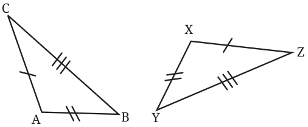
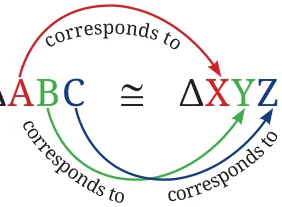
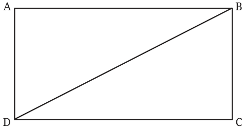
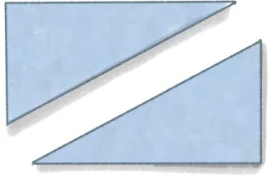

The two triangles given below are congruent. How can these two triangles be superimposed? Which vertices of \(\triangle XYZ\) and \(\triangle ABC\) should we overlap? This has to be done so that the equal sides overlap. Figure out how.

Overlapping Vertex A over Vertex X, Vertex B over Vertex Y and Vertex C over Vertex Z will ensure that equal sides overlap, making the triangles fit exactly over each other.
Are there other ways of overlapping the vertices so that the triangles fit exactly over each other? The fact that these triangles are congruent shows that their respective angles are equal:
\(\angle A = \angle X\), \(\angle B = \angle Y\) and \(\angle C = \angle Z\)
Thus, when two triangles are congruent, there are corresponding vertices, sides and angles which fit exactly over each other when the triangles are made to overlap. In this case, they are
- (a)Corresponding Vertices: A and X, B and Y, C and Z
- (b)Corresponding Sides: AB and XY, BC and YZ, AC and XZ
- (c)Corresponding Angles: \(\angle A\) and \(\angle X\), \(\angle B\) and \(\angle Y\), \(\angle C\) and \(\angle Z\)
To capture this relation that exists when two triangles are congruent, their congruence is written as follows:
\(\triangle ABC \cong\) ΔXYZ

By writing this, we mean that:
- •the first vertex in the name of ΔABC corresponds to the first vertex
in the name of ΔXYZ,
- •the second vertex in the name of ΔABC corresponds to the second
vertex in the name of ΔXYZ, and
- •similarly with the third vertices in the names of ΔABC and ΔXYZ.
By this convention, it is incorrect to write for these two triangles that ΔACB \(\cong\) ΔXYZ.
However, another correct way of saying it is ΔACB \(\cong\) ΔXZY.
Can you identify a pair of congruent triangles below? Why are they congruent?

Consider ΔABD and ΔCDB. Since ABCD is a rectangle, we have \(AB = CD AD = CB\) If the remaining sides of ΔABD and ΔCDB have the same length then the SSS condition is satisfied, confirming the congruence of the two
The remaining side is a common side BD, so the SSS condition holds. Hence, the triangles are congruent. We know the corresponding sides of the two triangles. We have to identify the corresponding vertices. Can they be the following? ΔABD ΔCDB A C B B D D
Verify this by superimposing paper cutouts of the triangles obtained from the rectangle ABCD (Fig. 1.1).

We see that this correspondence lays the side AB of ΔABD over the side CB of ΔCDB. But these sides need not be equal, and hence, this superimposition will not establish congruence.
Identify the correct correspondence of vertices and express the congruence between the two triangles.